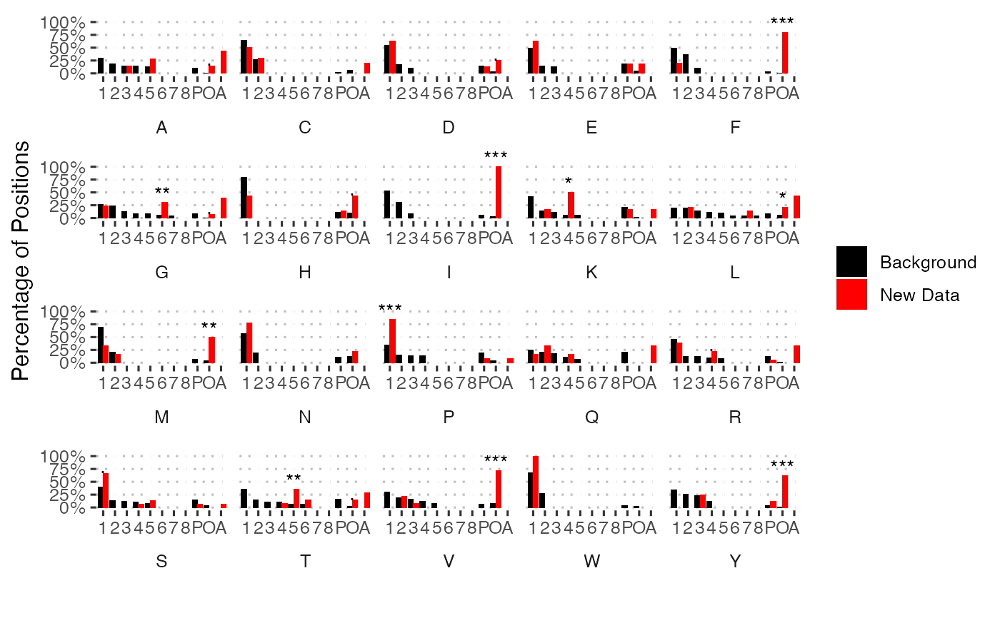

Plot the frequency each cluster occurs in an annotated deep mutational scan dataset, in order to identify data that strays from the expected frequencies. For example large proportions of outliers could suggest abnormal data or many permissive positions a weakly conserved protein. Proportions can also be explicitly compared to the frequencies in the deep_landscape dataset. In this case differences are tested using an FDR corrected two sided binomial test.
plot_cluster_frequencies(x, compare = FALSE)
Arguments
| x | |
|---|---|
| compare | Compare frequencies to those in the base dataset. |
Value
A ggplot2 plot. This is a horizontal stacked bar plot when compare = FALSE and a
vertical side by side bar plot for compare = TRUE
Examples
# Plot multiple studies comb_dms <- bind_scans(dms, annotate_missing = TRUE) plot_cluster_frequencies(comb_dms)# Compare to the deep_landscape dataset plot_cluster_frequencies(comb_dms, compare = TRUE)